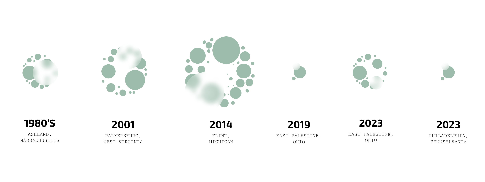
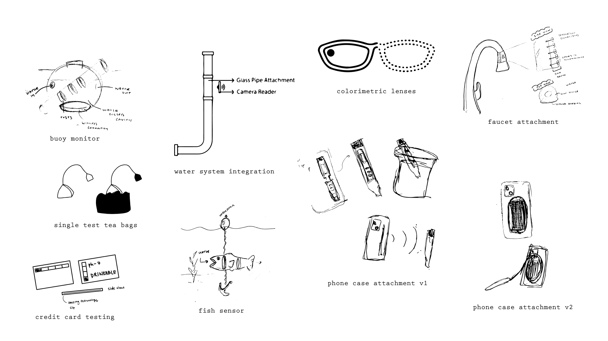
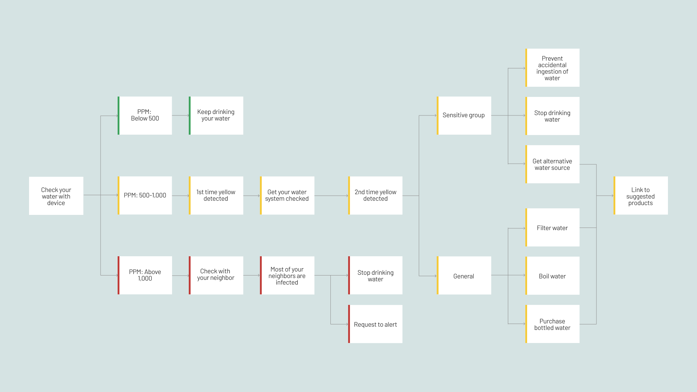
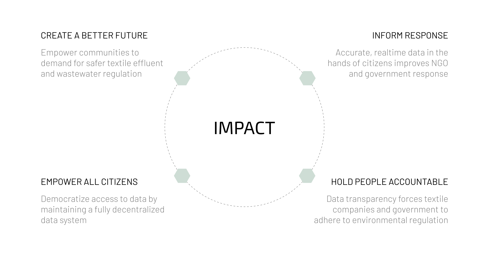

Base: Water Contamination Detection
UI/UX Design + Interaction Design + 3D Modeling
Overview
Brief
Base is a comprehensive solution designed to address the critical issue of water contamination. This project involves the development of a sensor that detects contaminants in water and immediately uploads the test results to a decentralized virtual platform. By leveraging advanced technology and a user-centered design approach, Base aims to enhance water safety and transparency, empowering users to monitor and ensure the quality of their drinking water effectively. The sensor is designed for various use cases, including emergency response, consumer home monitoring, and future integration into building infrastructure, providing real-time, reliable data to safeguard public health.
Duration
Jan - May 2023
Role
Researcher, UI/UX Designer
Skills
- Use Cases
- Field Visits
- Digital Prototyping
- Physical Prototyping
- 3D Printing
Tools
- Figma
- Illustrator
- SolidWorks
Problem
Water contamination is a critical and growing issue
Access to clean and safe drinking water is essential. Increasing natural and chemical disasters have led to significant contamination of waterways. In the United States, nearly half of water sources are too polluted for swimming, fishing, or drinking. Additionally, government agencies have often obscured the true extent of water quality issues.
Research
Investigating real-world contamination incidents
Ashland, MA
From 1965 to 1978, companies like Nyanza Inc disposed of toxic textile effluent, leading to severe contamination of soil, groundwater, and wetlands with mercury, chromium, arsenic, and lead. Residents suffered severe health impacts, including rare cancers, due to prolonged exposure to these contaminants.

Competitive Analysis
Assessing existing solutions and identifying gaps
High Costs
Existing high-accuracy solutions are expensive.
Toxic Reagents
Testing textile dyes requires highly toxic reagents.
Lack of Connectivity
No consumer-facing products are connected to a decentralized network.

Research Question
How might we create a community network by decentralizing water quality data from chemical disasters?
This question aims to explore the development of a system that empowers communities by providing transparent and accessible water quality information.
Insight 1
Water contamination is widespread and dangerous
Research in Ashland, MA revealed severe contamination with mercury, chromium, arsenic, and lead due to industrial waste disposal. Residents experienced severe health impacts, highlighting the critical need for reliable water quality testing.
Insight 2
Existing solutions are costly and not user-friendly
Competitive analysis shows that high-accuracy water testing solutions are expensive and require toxic reagents. There are no affordable, consumer-friendly options connected to a decentralized network, underscoring the need for a more accessible solution.
Insight 3
User feedback highlights the need for real-time water quality data
Interviews and surveys indicate that users desire real-time, reliable data on water quality to ensure their safety. The lack of accessible tools for immediate testing and reporting exacerbates the risk and uncertainty faced by communities in contaminated areas.
Solution
Developing a real-time water contamination sensor
Based on research findings, a water contamination sensor was designed to upload test results immediately to a decentralized virtual platform. The sensor can be applied in three main scenarios: emergency response, consumer home monitoring, and future integration into building infrastructure.
System Map
Understanding the roles and interactions in water contamination management
The system map for Base outlines the roles of various stakeholders in addressing water contamination, emphasizing their responsibilities and interactions.
NGOs
Support community health, track contamination, push for policy changes, and hold governments accountable.
Textile Dye Companies
Currently use cost-effective dyes but are incentivized to adopt sustainable practices to avoid liability and meet public demand.
Government/EPA
Ensure access to clean water, regulate industries, build trust, improve disaster response, and reduce liability.
General Public
Advocate for safety and health, demand clean water, and influence industry practices through awareness and demand for affordable, safe products.
Ideation
Creating practical and effective sensor designs
Based on the research and findings, a water contamination sensor that immediately uploads test results to a decentralized virtual platform was conceptualized. Various iterations were explored to address the identified challenges and user needs.
Initial Design
Exploring and refining the Base sensor concept
Physical Prototype
The exploded view shows the components of the faucet sensor, including the glass, water container, lightbox screen, battery, and attachment piece. This design was initially created to provide a comprehensive water quality monitoring solution. However, it was abandoned due to its complexity and high production costs, as well as potential issues with durability and user assembly.
Digital Prototype
The app interface displays real-time data on water quality, such as sulfur percentage, with options to upload data to a database and view a map of water quality. While this design aimed to offer detailed monitoring, it lacked user-friendly navigation and clear visual feedback. Users found it difficult to interpret the data and take appropriate actions, leading to its abandonment in favor of a more intuitive and accessible interface.
Use Cases
Addressing diverse needs with tailored solutions
Consumer: Faucet
.png)
User
People concerned with water quality
Design Principles
Accessible, continuous testing, easily integrated, alerts users, provides actionable advice.
Emergency: Drone
.png)
User
Emergency Workers
Design Principles
- Accessible
- Continuous testing
- Can be added to your existing home
- Should warn you/alert you
- Should tell you what to do next
Future: Pipe Integration
.png)
User
Everyone (part of building code)
Design Principles
Ubiquitous, continuous testing, part of daily life.
Creative Direction
Emphasizing performance, aesthetics, and future-readiness
Performance
Reliable feedback, tamper-proof, easy maintenance
- Provide Feedback
- Not Being Tampered With
- Easy Maintenance
- Systematic
Aesthetics
Discreet, seamless, simple design
- Discreet
- Seamless
- Simple
- Future
Soul
Emphasizes trust, transparency, smart and approachable design
- Trust
- Transparency
- Smart
- Approachable
User Flow
Ensuring seamless interaction and effective water safety responses
The user flow for Base ensures users can effectively monitor and respond to water contamination, providing clear actions based on water quality readings.
Data Process
Simplifying the process for users
1. Detection
Probe detects contaminants.
2. Data Collection
Connect to Arduino to collect data.
3. Data Storage
Store data in the cloud.
4. User Interface
Translate data to the user interface for real-time feedback.
Prototype
Enhancing home water safety with real-time monitoring
The final prototype of the Base Consumer: Faucet sensor provides an intuitive solution for continuous water quality monitoring at home. This prototype includes a physical faucet attachment and a digital interface for real-time data monitoring. The faucet sensor integrates seamlessly with existing plumbing, offering instant feedback on water quality. The digital prototype displays user-friendly data visualizations, alerting users to any contaminants and providing actionable advice. This ensures consumers can confidently ensure their water is safe, enhancing health and safety in everyday life.
Impact
Democratizing water quality data for community empowerment
The Base prototype enhances home water safety with continuous monitoring and real-time feedback. It empowers marginalized communities, improves responses from NGOs and governments, and increases accountability for textile companies. By providing transparent data, Base promotes cultural awareness and demands for safer water practices, ultimately enhancing public health and safety.
Limitations
Further enhancements are needed to improve detection and usability
While the Base water contamination sensor shows promise, there are several areas for improvement. Expanding the sensor's capabilities to identify a broader range of contaminants is essential. Additionally, incorporating more sensors can enhance data fidelity and precision. Finally, refining the product design is necessary to ensure it is ready for widespread deployment and user adoption.
Reflection
Designing Base highlighted the importance of user-centered design and real-time data
Working on the Base water contamination sensor project underscored the critical need for accessible, real-time water quality testing solutions. Engaging with affected communities and understanding their challenges were essential in shaping the design and functionality of the sensor. This project emphasized the value of user-centered design and the impact of providing transparent, reliable data to empower users. The experience also highlighted the importance of iterative development and responsiveness to user feedback to create a product that genuinely addresses a significant public health issue. Moving forward, these insights will guide future enhancements and the broader application of similar technologies.